Tutorial #2: Basic Map Elements
Chapman University. Earth from Above: Env 329 - Fall 2023
Objectives :
- Learn the map making features in QGIS.
- Introduce basic map elements.
- Create a NASA worthy map of surface temperatures from Death Valley National Park.
Motivation For Today’s Tutorial : NASA Press Releases
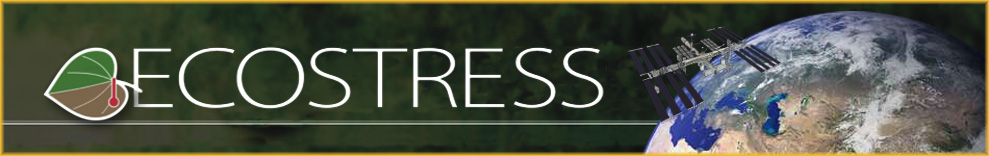
The idea of this course is to change the way we approach climate disaster analyses and immerse you in the process of science communication. Today we are going to create a publish worthy map of the Death Valley National Park surface temperature experiment we ran in last class. Today’s tutorial will provide you with the basic working knowledge to create beautiful and informative maps. Later in the course you will use these skills to analyze current climate disasters and publish your maps through NASA’s Jet Propulsion Lab.
Create A Base Map
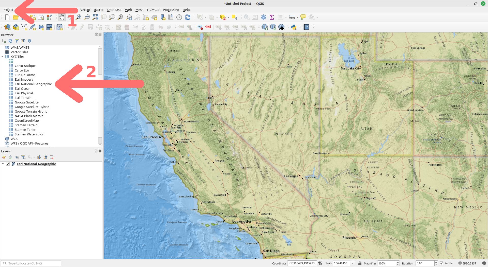
- Create a new project (Project → New)
- Add the ESRI National Geographic Basemap by either:
- Using the XYZ Tiles function in the Browser window
- Using the HCMGIS Menu (HCMGIS → Basemaps → ESRI National Geographic)
- Zoom in to California.
- Start a new print layout by going to the Project menu, then select New Print Layout. Enter whatever name you would like. I went with Death Valley Inset.
- Now select the menu Add Item, then Add Map. Start at one corner of the white rectangle window and drag to the opposite diagonal corner to set the map space. You will see that the rectangle window will be rendered with the map from the main QGIS canvas.
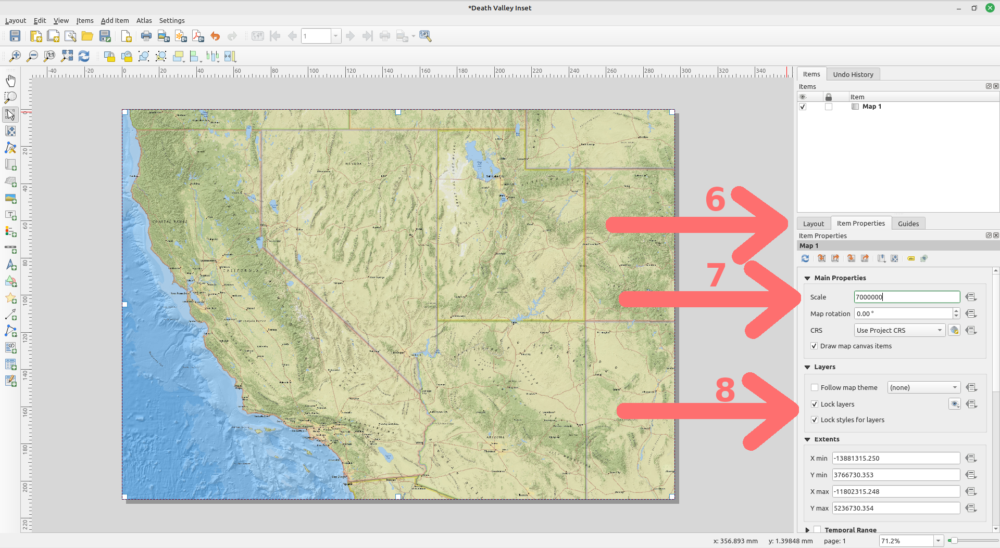
- Click on the Item Properties tab.
- Adjust the Scale, which is the zoom level, to 7000000 and hit enter.
- Check both Lock layers and Lock layer styles boxes. This will ensure that if we turn off some layers or change their styles, this view will not change.
Add An Inset
- Let’s add our map from the last tutorial as an inset to this map. First, return back to the main QGIS window. Add a second basemap layer following the same instructions as above, but this time use Google Satellite.
- Uncheck the box next to the ESRI National Geographic layer in the Layer window, and QGIS will keep the layer in the project but not display any of its information.
Importing Our ECOSTRESS Death Valley Layer From The Previous Tutorial
- Use the browser window to find the folder that you saved the two land surface temperature tif files in from the last tutorial. Double click each file to add them to your map.
- Adjust the symbology for each of the land surface temperature layer by right clicking on the layer name in the Layers window and select Layer Properties. On the menu bar to the left select Symbology and change the Render type to Singleband pseudocolor. Use the red color ramp and remember to match the minimum and maximum values from the surface temperature, 306.82 as the minimum and 347 as the maximum for both layers. Click apply.
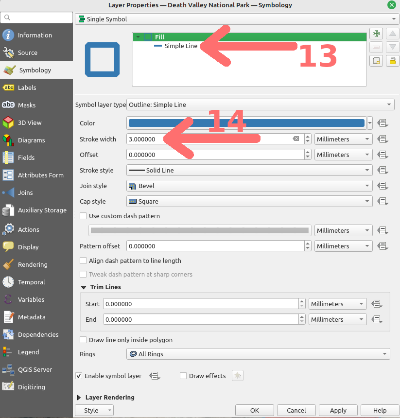
- Add in the border from the DeathValleyNationalPark.zip shapefile. In the Browser window expand the zip file using the small arrow next to the filename. Double click on Death Valley National Park.shp to add the layer. Right click on the layer in the Layers window and change it’s symbology to outline blue. The lines are a little thin, let’s make them thicker. First, click on the Simple Line selection in the dialog box.
- Change the Stroke width to 3 mm. Click the Apply button at the bottom of the window.
- Zoom in so that the outline of Death Valley National Park fits nicely in the window, it should look like this:
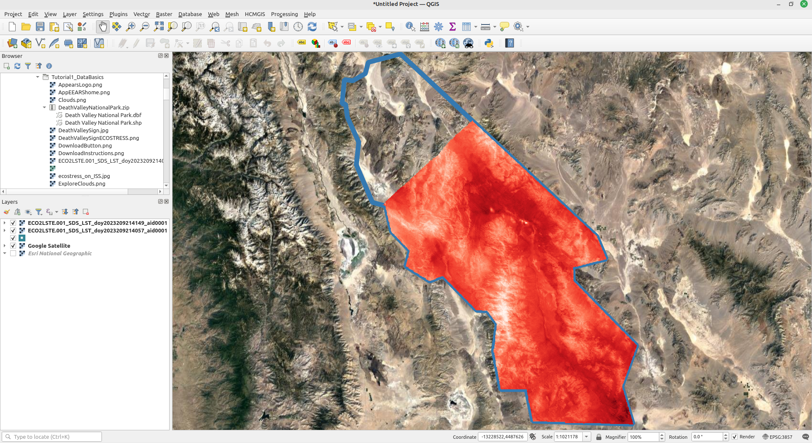
Adding in our Land Surface Temperature Map as an Inset
- Now that we have the map how we like it the main window, switch back to the Print Layout window. Select the menu Add Item, then Add Map. Click and create an inset of the land surface temperature to the East of California.
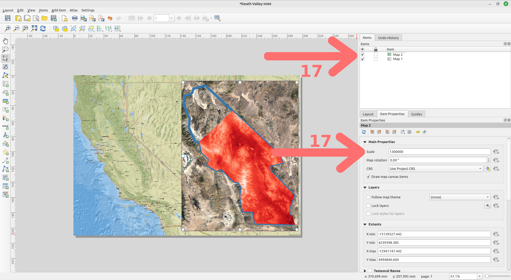
- Under the Item Properties for the inset map (typically numbered Map 2 in the Items window), change the scale to 1300000.
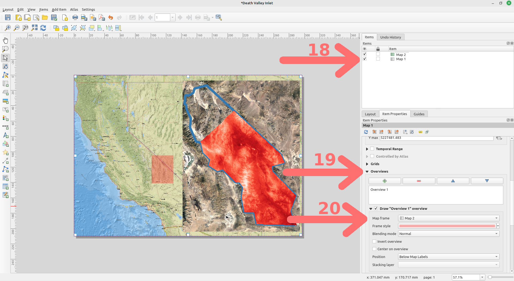
- QGIS has an excellent tool for automatically highlighting the area on the main map that is represented in an inset. First, select Map 1 (or whatever your main map number is) in the Items window.
- Next under Item Properties scroll down to find the Overviews menu. Click the green plus sign to an overview.
- Under map frame select Map 2 (or whatever you have named your inset map). The area from the inset should now be highlighted on the main map. Adjust the highlight color to match your mood.
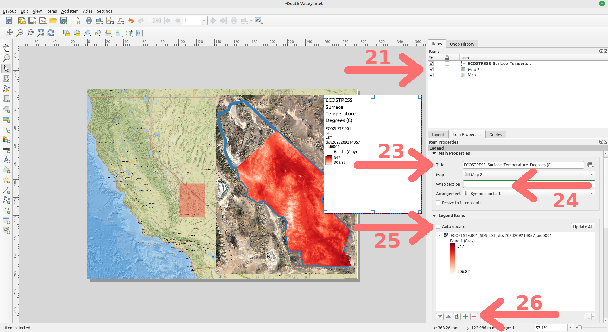
Basic Map Elements
Adding a Legend
- Select Map 2 from the Items window.
- From the Add Item menu bar, select Legend. Draw the legend as a box in the top left corner of the inset map. We can adjust its size later, so don’t worry too much about how it looks right now.
- Under Item Properties enter “ECOSTRESS_Degrees (F)”.
- For Wrap text on enter an underscore “_”.
- Deselect the check box next to Auto update.
- Remove all legend entries except one of our ECOSTRESS surface temperature layers, by selecting the ones you want to remove and using the minus button.
NOTE: We matched the temperature ranges for both of the layers, so that is why we only need one legend.
The SI unit of temperature set for the International System of Units is Kelvin (K), which is how the land surface temperature observations made by ECOSTRESS are reported. You can use the formulas below to convert K into degrees Celsius or Fahrenheit, which are often more intuitive to your target audiences.
* C = K - 273.15
* F = (K − 273.15) × 9/5 + 32
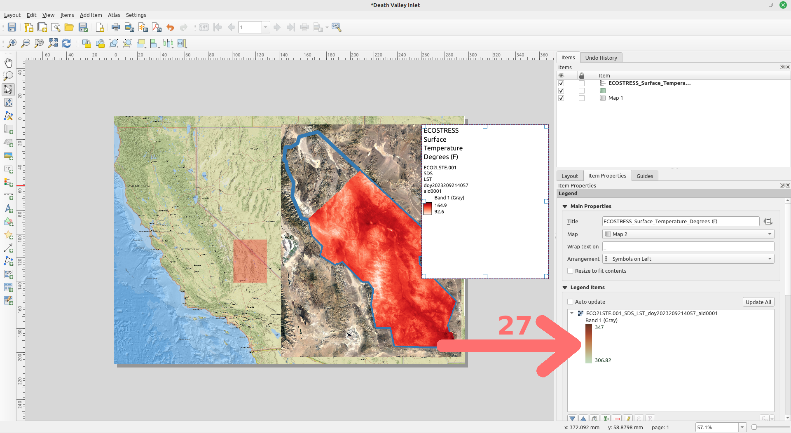
- To change the scale of the legend bar, double click on the scale in the Legend Items property window.
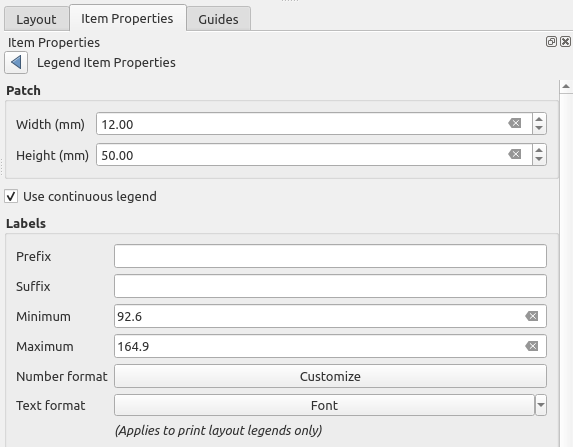
- Converting our temperature scale to degrees Fahrenheit yields a range of 92.6 to 164.9, enter that in the place of the default minimum and maximum values. Let’s also adjust the width to 12 mm and the height to 60 mm. Use the back arrow to go back to Item Properties.
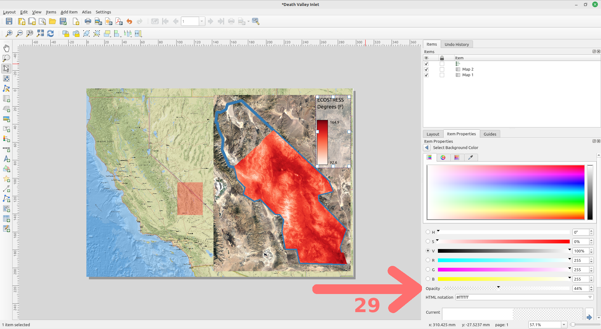
- Let’s make the legend look a little more professional by adjusting the background color. Scroll down and look for the Background section of the Item Properties. Use the arrow to expand your options. Here you can change the color, but for now let’s leave it white but change the Opacity to 44%. This makes the legend back more transparent, giving it a cleaner look. It should resemble the screenshot above. Return back to the list of item properties.
Adding Gridlines
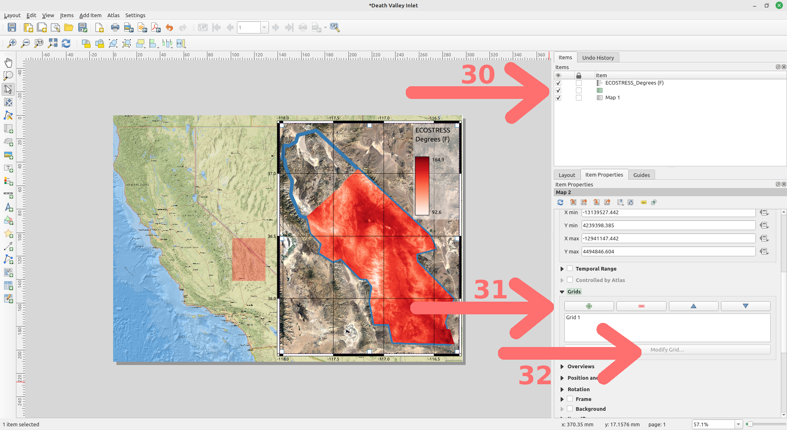
- Let’s add gridlines to our inset map so readers can tell where the GPS coordinates of our analyses are at a quick glance. Select the inset map in the Items browser, it is likely named “Map 2”.
- Select the Item Properties tab and scroll down until you reach the Grids subsection. Click the plus sign to add a set of gridlines.
By default, the grid lines use the same units and projections as the currently selected map projections. However, it is more common and useful to display grid lines in degrees.
- We can select a different CRS for the grid and customize the aesthetics by clicking the Modify Grid button.
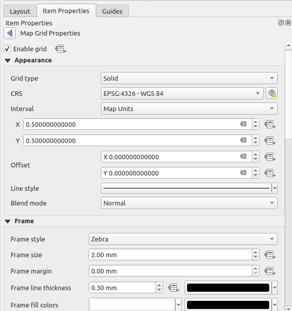
- Make the following modifications (see above and below screenshots for reference):
- Keep the Grid Type as Solid.
- Change the CRS to EPSG:4326 - WGS 84 to display GPS coordinates as decimal degrees.
- Change the X & Y Intervals to 0.5.
- Change Frame style to Zebra.
- Check the box for Draw Coordinates.
- Disable the Right Coordinates.
- Change Coordinate precision to 1.
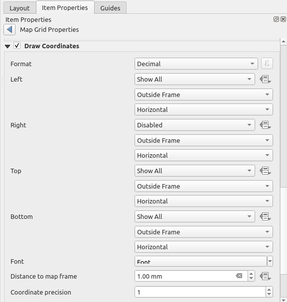
Your map should now resemble:

NOTE: This same procedure could have been done for the main map instead of the inlet map, if that suits your vision.
Let’s add a couple more small details to bring this map to the next level.
Adding a Scalebar
Will we now have coordinates for the inset map, it can be critical for the reader to know the scale of the maps they are looking at. This is achieved with a scalebar, which QGIS can automatically render for you.
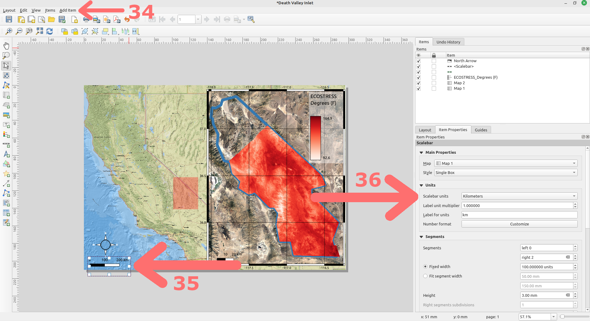
- With the main map (likely “Map 1”) highlighted in the Items browser, click the Add Item menu at the top of the screen and select Add Scalebar.
- Draw the scalebar on the main map in a logical place. I like the bottom left corner, which thus far has remained underutilized.
- Under Item Properties verify that the main map is the map associated with the scalebar. Here you could also adjust the style or units to your liking, but I am just going to stick with the defaults.
Adding a North Arrow
It is customary to indicate which direction is North on a map with a symbol of an arrow pointed North. This is a simple add in QGIS.
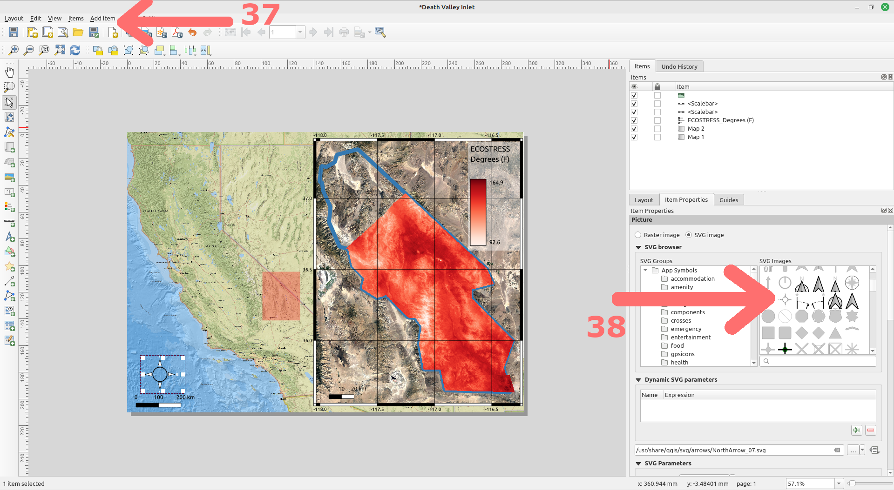
- Click the Add Item menu at the top of the screen and select Add North Arrow.
- Select your preferred North arrow symbol, I am going with a traditional looking compass style with the cardinal directions labeled. Draw the North arrow in an appropriate place, I selected a centered location above the scalebar.
NOTE: SVG Images tend to look cleaner and sharper compared to the Raster Image options.
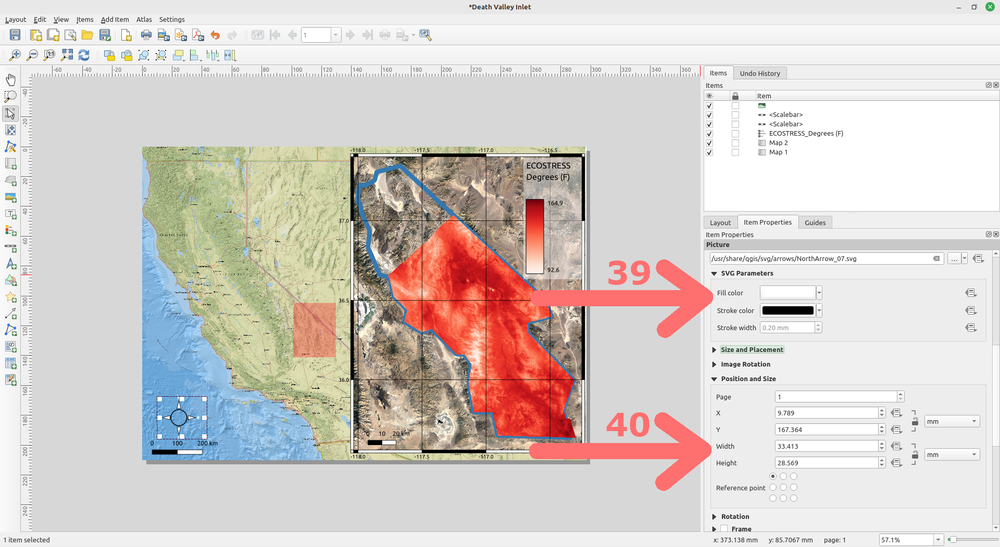
- To adjust the properties of the North arrow, scroll down on the Item Properties window to find such useful features as changing color or size.
Adding a Title
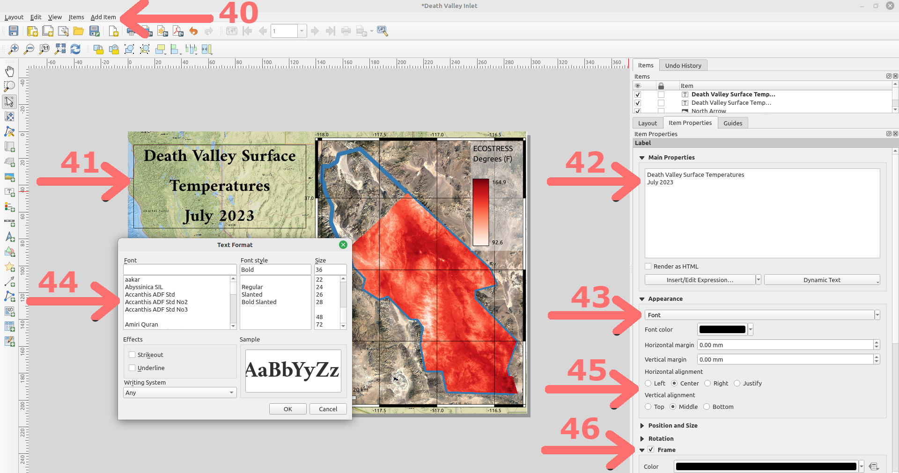
One last addition, let’s add a title to the map.
- Click the Add Item menu at the top of the screen and select Add Label.
- Click on your map and draw a box where you want the title to be.
- In the Item Properties tab, expand the Label section and enter the text to title the map, I went with “Death Valley Surface Temperatures July 2023”. You may want to play around with the spacing to get it to look clean and professional.
- Under the Appearance drop down you can click on the font box to open up the Text Format window.
- From here you can pick your favorite font and size. You could also change the font color under the Appearance dropdown as well.
- You can also adjust the alignment, I set mine to Center horizontal alignment and Middle vertical.
- Check the box next to Frame and adjust the parameters to draw a frame around your title.
Exporting Your Map
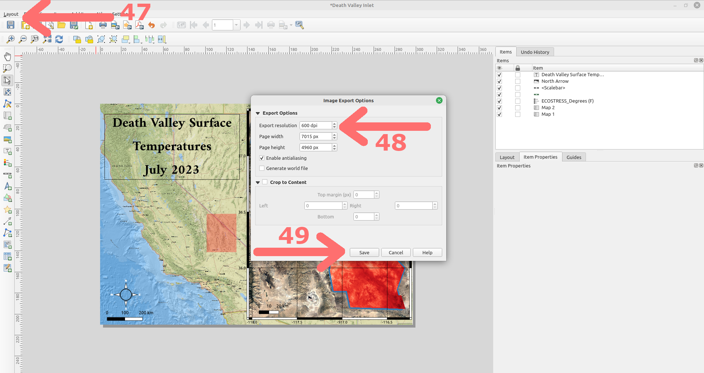
Now that our map looks exactly how we want it to look, we want to be able to share it with friends, family, our Instagram followers, and ultimately… NASA.
- To do so, select the Layout dropdown menu, then Export as Image.
- The Export resolution controls how much detail the output image contains. Smaller resolution = smaller filesize but with less detail saved. More resolution = more detail saved but larger filesize. If storage is an issue for you, go with 300 dpi, if not I like 600 dpi to capture the detail in most cases.
- Click Save and bask in the glory of your first ECOSTRESS map, which (hopefully) resembles the one below. Congratulations… You did a thing!
NOTE: There may be times when you want to export as PDF, particularly when the map needs to be scalable to different sizes.

Answering Our Original Question
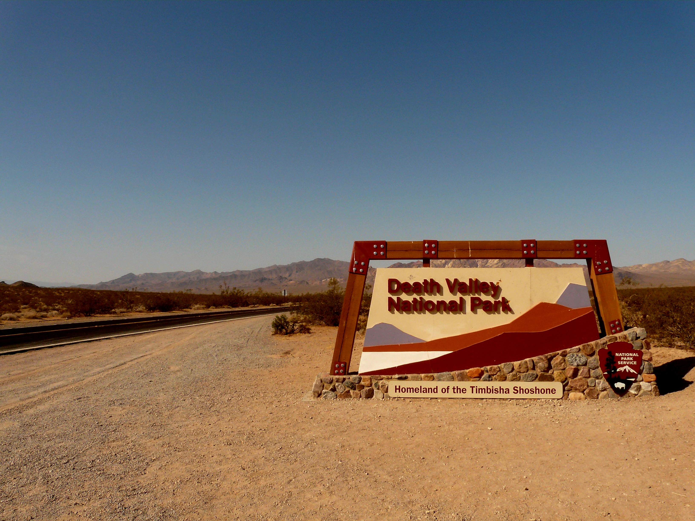
If you recall our motivation for this exercise was to see if an analysis with ECOSTRESS supported that land surface temperatures in Death Valley National Park came close to breaking the surface temperature record.
Given that the highest recorded ground temperature of 201 degrees F was verified on July 15, 1972, it appears that our analysis does not support that surface temperatures exceeded that record in July of 2023, despite that it was one of the hottest months in recorded history for air temperatures.
NOTE: It is important to remember that the process of science “supports” or “does not support” hypotheses. It does not entirely “prove” or “disprove” ideas. There are many factors that prevent our analyses from being entirely conclusive. These include the measurement error of our instrument, the times of day the satellite passed over the study site, cloudiness, etc…
The real power of the ECOSTRESS satellite comes in its geographic and temporal continuity. For instance, it is easy to see from our map which parts of Death Valley have the highest surface temperature. We could also track this seasonally, to see the effect of vegetation. The possibilities are endless.
Map of the Week Assignments
- Read The misuse of colour in science communication by Crameri, F., Shephard, G.E. & Heron, P.J. Nat Commun 11, 5444 (2020).
- Have fun and make an interesting temperature map designed with your favorite theme in mind and submit it before next class. You could use this map or create a new one. Example themes to get your brain churning:
- Wes Anderson
- Van Gogh
- Antique
- Rick and Morty
- The Best Taylor Swift Album (Obviously Midnights)
Data
In case you encountered any issues with the AρρEEARS database, here are copies of the ECOSTRESS GeoTIFF files for Death Valley:
Citation: Forsythe, Goldsmith, Fisher 2023.